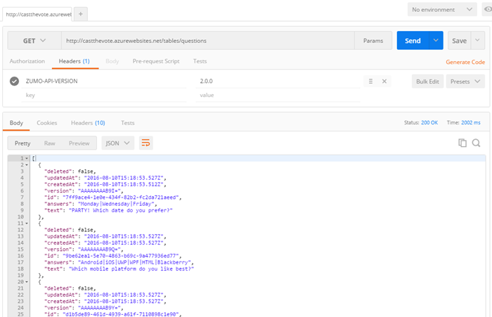

Duration
10 minutes
Goals
In this lab exercise, you will add a new table and endpoint to your mobile application using Visual Studio and ASP.NET. This new table will hold the pre-created survey questions for our clients. This exercise can only be done if you used ASP.NET to create your back end. If you used the portal to create your service (e.g. Node.js) then you need to use these instructions instead.
Assets
There is a completed version of the exercise in the Exercise 4/Completed folder.
Challenge
You are going to add a new questions DTO and endpoint; in addition, we will seed this table with data the first time we access it. This will require that you create a class to represent this both in our database and over the wire when talking to a client. You will add a class named SurveyQuestion to provide this support. You will also need to add a new TableController to expose this table over the network. The DTO you will create will have the following properties:
string Textto hold the question for the survey.string Answerto hold the '|' separated list of possible answers.
You want to store this object in a table named "questions", the JSON format will match the DTO object (the JSON parser will automatically lowercase the property names).
The table controller should only expose the GET options (all or by ID). We will not allow this table to be updated.
Finally, we will seed it with data using a database initializer function by creating a set of SurveyQuestions and inserting them into the table.
Steps
Add the question DTO
- Create a new class in the Data Objects folder. Name it "SurveyQuestion".
- Have the class derive from
Microsoft.Azure.Mobile.Server.EntityData. - Add the following public properties to the class:
string Textto hold the question.string Answersto hold the answers.
- Add a
[Table("questions")]attribute to the class to properly name the table.
Create the survey question Table Controller
The next step is to expose this DTO through a Table Controller. We will use the same process we did in the last lab.
- Add a new Azure Mobile App Table Controller to the Controllers folder.
- In the Add Controller dialog:
- Select your
SurveyQuestionDTO from the Model class drop-down. - Select the
MobileServiceContextfrom the Data context class drop-down. - Make the name of your new controller "QuestionsController". This will set the endpoint to "questions".
- Select your
- Click Add to add the controller code.
- VS should open the new controller - if not, do that yourself and remove all the update methods (Post, Patch and Delete). You should only have the initialization method,
GetAllSurveyQuestionsandGetSurveyQuestion.
Dealing with schema changes
We've changed our database schema by adding a new table to the EF DbContext (this was done by the Add Controller step above). By default, this will break our service because it doesn't expect the DTO shape or the MobileServiceContext (which is the EF DbContext) to ever change. We have several ways we can deal with this problem:
- We can initialize the database tables the first time we access the database as a one-time operation. This is the default.
- We can recreate the database tables when the schema changes.
- We can create migration steps when the schema changes.
- We can manually adjust the schema using SQL Management Studio (or just drop all the tables).
What initializes the database?
One-time initialization
The CreateDatabaseIfNotExists<MobileServiceContext> database initializer class directs Entity Framework to create the database tables needed to run the service if no tables exist in the database. This initializer only runs once - if we later add/change/delete a DTO, the service will throw an exception indicating the schema is out of date and does not match the model.
Re-create tables when schema changes
The database initializer class DropCreateDatabaseIfModelChanges<MobileServiceContext> instructs Entity Framework to drop all the tables and recreate them if the model (MobileServiceContext) or any DTOs in the model changes. Recall that when we add a new Table Controller, a DbSet property gets created in the MobileServiceContext to represent the table - the system identifies this using reflection and recognizes that the DB schema is different. It will then re-create all the tables using the current model; however we will lose all our data.
Code First Migrations
This method of keeping the database in sync with the data model by dropping the tables works well until you deploy the application to production and have data you want to keep. The way we can solve this problem is to use Code First Migrations. This allows Entity Framework to update the database schema instead of dropping and re-creating the database when the DTO or model has changed. The setup for this is a bit complex, but this blog post covers it in great detail.
Adjust the DB schema manually
Finally, we can use a SQL tool to change the DB schema to match our expectations. This is a manual process and would involve someone logging into the SQL server with SQL Management Studio (or some other tool) and executing SQL DML commands to alter the table(s) and add information into the schema.
Add our seed data and force EF to recreate our tables
Let's change our database initializer to re-create our tables to force it to create our new DTO and seed the data.
- Let's start by adding the seed data. Add a new
staticclass to the project named DataFactory and add the following code to it (just copy/paste the code below and then add any missing namespaces using CTRL+.): - Open the Startup.MobileApp.cs file in the App_Start folder in the Solution Explorer.
-
Locate the database initializer class named
MobileServiceInitializer. The base class used here,CreateDatabaseIfNotExists, will create the tables the first time and throw an error if the schema is ever changed in the future. We don't want that behavior so change it toDropCreateDatabaseIfModelChanges. -
The initialization process will also call the defined
Seedmethod to populate any tables with data. There might be some code here to initialize theTodoItemDTO which was added as part of the initial project template. You can remove that code and instead add all the questions from theDataFactory.Questionsstatic list to thecontext.SurveyQuestionsdatabase set using theAddRangemethod.
static class DataFactory
{
public static List<SurveyQuestion> Questions
{
get
{
return new List<SurveyQuestion>
{
new SurveyQuestion { Id = Guid.NewGuid().ToString(),
Text = "Where should we have lunch?",
Answers = "McDonalds|Sushi King|Olive Garden|Outback Steakhouse|KFC" },
new SurveyQuestion { Id = Guid.NewGuid().ToString(),
Text = "PARTY! Which date do you prefer?",
Answers = "Monday|Wednesday|Friday" },
new SurveyQuestion { Id = Guid.NewGuid().ToString(),
Text = "Which mobile platform do you like best?",
Answers = "Android|iOS|UWP|WPF|HTML|Blackberry" }
};
}
}
}
Publish the site and list the questions
Publish the site to Azure (or run it locally). Once the site is live check your new endpoint (<URL>/tables/questions) using your REST client.
Remember to add the ZUMO-API-VERSION header value. It may take as long as a minute to respond when it detects that the database is out of sync; it will the drop and create all the data and run our seed method. It's possible that your request may timeout as well - if so, just reissue it. Eventually you should get the list of questions back as JSON:
Summary
In this exercise, you added a new table with pre-supplied data to your service using Visual Studio.